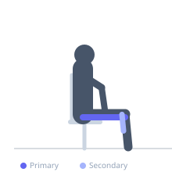
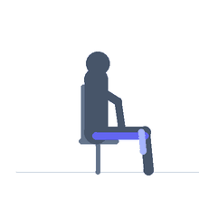

Exercise guide / Seated Hamstring Stretch
Seated Hamstring Stretch
The seated hamstring stretch is performed with both legs extended on the floor in a long-sitting position, then hinging the torso forward over the legs. The seated position provides a stable base and allows the lower back to relax, making this variation accessible and suitable for people who struggle to balance during the standing version. The stretch targets the entire hamstring group as well as the calf muscles when the feet are dorsiflexed.
Primary muscles
biceps femoris long head
semitendinosus
semimembranosus
Secondary muscles
soleus
Equipment
No Equipment (Bodyweight)


Starting position
- Sit on the floor with both legs extended straight in front of you and feet hip-width apart. Sit up tall with spine neutral.
Setup
- Sit on a mat for comfort. If the lower back rounds severely in the starting position, sit on a folded blanket to elevate the hips.
Steps
- Step 1: Sit tall with legs extended and feet flexed (toes pointing toward the ceiling).
- Step 2: Take a breath and elongate the spine.
- Step 3: Hinge forward from the hips, reaching the hands toward the feet or shins.
- Step 4: When a hamstring stretch is felt, stop and hold — do not round the spine aggressively.
- Step 5: Hold 30–90 seconds, breathing slowly.
Coaching cues
- Lead with the chest, not the hands
- Flex the feet — this increases the calf and hamstring stretch
- Think of moving your belly button toward your thighs, not your head toward your knees
Breathing
- Breathe slowly and deeply. Exhale and gently extend further on each breath out.
Range of motion
- Hinge as far forward from the hips as the hamstrings allow while keeping the spine relatively long.
Tempo
- Hold 30–90 seconds. 2–4 rounds.
Common mistakes
- Rounding the spine to reach further — this reduces hamstring stretch and loads the lumbar discs
- Forcing the legs flat if the hamstrings are very tight — slight knee bend is acceptable for tight individuals
- Holding tension in the neck and shoulders
Safety
- If a sharp sensation is felt behind the knee or in the lower back, reduce the range of motion
- Avoid if experiencing acute hamstring strain
Training
- mobility: 2–4 reps
- mobility: 1–3 sets
- Rest: {'mobility': 15}